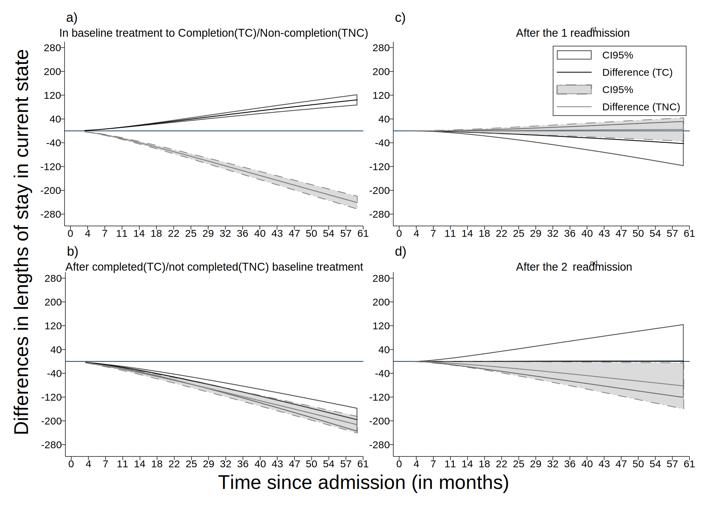

Date created: 20 Oct 2023.
Install commands that are unavailable or out of date.
. clear all
.
. cap noi which predictms
C:\Users\CISS Fondecyt\ado\plus\p\predictms.ado
*! version 4.4.1 17jan2023 MJC
. if _rc==111 {
. cap noi net install multistate, from("https://www.mjcrowther.co.uk/code/multistate")
. }
. cap noi which merlin
C:\Users\CISS Fondecyt\ado\plus\m\merlin.ado
*! version 2.1.5 18mar2022 MJC
. if _rc==111 {
. cap noi net install merlin, from("https://www.mjcrowther.co.uk/code/merlin/")
. }
. cap noi which sumat
C:\Users\CISS Fondecyt\ado\plus\s\sumat.ado
*! Part of package matrixtools v. 0.25
*! Support: Niels Henrik Bruun, niels.henrik.bruun@gmail.com
*! 2021-01-03 toxl added
. if _rc==111 {
. cap noi scc install matrixtools
. }
. cap noi which estwrite
C:\Users\CISS Fondecyt\ado\plus\e\estwrite.ado
*! version 1.2.4 04sep2009
*! version 1.0.1 15may2007 (renamed from -eststo- to -estwrite-; -append- added)
*! version 1.0.0 29apr2005 Ben Jann (ETH Zurich)
. if _rc==111 {
. cap noi ssc install estwrite
. }
.
. cap noi which scurve_tvc
C:\Users\CISS Fondecyt\ado\plus\s\scurve_tvc.ado
. if _rc==111 {
. cap noi net install st0458.pkg
. }
. cap noi which strmcure
C:\Users\CISS Fondecyt\ado\plus\s\strmcure.ado
*! Version 4.0 31-Aug-2015
. if _rc==111 {
. net install st0374_1.pkg
. }
. cap noi which stjmgraph
C:\Users\CISS Fondecyt\ado\plus\s\stjmgraph.ado
*! version 1.0.2 01Jun2011 MJC
. if _rc==111 {
. net install st0289.pkg
. }
We need to obtain the file and the work folder.
. mata : st_numscalar("OK", direxists("/volumes/sdrive/data//"))
. if scalar(OK) == 1 {
. cap noi cd "/volumes/sdrive/data//"
. global pathdata "/volumes/sdrive/data//"
. di "Location= ${pathdata}; Date: `c(current_date)', considering an OS `c(os)' for the user: `c(username)'"
. }
. else display "This file does not exist"
This file does not exist
.
. mata : st_numscalar("OK", direxists("E:\Mi unidad\Alvacast\SISTRAT 2019 (github)\_mult_state_ags\"))
. if scalar(OK) == 1 {
. cap noi cd "E:\Mi unidad\Alvacast\SISTRAT 2019 (github)\_mult_state_ags"
. global pathdata "E:\Mi unidad\Alvacast\SISTRAT 2019 (github)\_mult_state_ags"
. global pathdata2 "E:/Mi unidad/Alvacast/SISTRAT 2019 (github)/_mult_state_ags/"
. di "Location= ${pathdata}; Date: `c(current_date)', considering an OS `c(os)' for the user: `c(username)'"
. }
. else display "This file does not exist"
This file does not exist
.
. mata : st_numscalar("OK", direxists("G:\Mi unidad\Alvacast\SISTRAT 2019 (github)\_mult_state_ags\"))
. if scalar(OK) == 1 {
. cap noi cd "G:\Mi unidad\Alvacast\SISTRAT 2019 (github)\_mult_state_ags"
. global pathdata "G:\Mi unidad\Alvacast\SISTRAT 2019 (github)\_mult_state_ags"
. global pathdata2 "G:/Mi unidad/Alvacast/SISTRAT 2019 (github)/_mult_state_ags/"
. di "Location= ${pathdata}; Date: `c(current_date)', considering an OS `c(os)' for the user: `c(username)'"
. }
. else display "This file does not exist"
This file does not exist
.
. mata : st_numscalar("OK", direxists("C:\Users\CISS Fondecyt\Mi unidad\Alvacast\SISTRAT 2019 (github)\_mult_state_ags\"))
. if scalar(OK) == 1 {
. cap noi cd "C:\Users\CISS Fondecyt\Mi unidad\Alvacast\SISTRAT 2019 (github)"
C:\Users\CISS Fondecyt\Mi unidad\Alvacast\SISTRAT 2019 (github)
. global pathdata "C:\Users\CISS Fondecyt\Mi unidad\Alvacast\SISTRAT 2019 (github)\_mult_state_ags"
. global pathdata2 "C:/Users/CISS Fondecyt/Mi unidad/Alvacast/SISTRAT 2019 (github)/_mult_state_ags/"
. di "Location= ${pathdata}; Date: `c(current_date)', considering an OS `c(os)' for the user: `c(username)'"
Location= C:\Users\CISS Fondecyt\Mi unidad\Alvacast\SISTRAT 2019 (github)\_mult_state_ags; Date: 20 Oct 2023, considering an OS Windows for the user: CISS Fondecyt
. }
. else display "This file does not exist"
.
. mata : st_numscalar("OK", direxists("C:\Users\andre\Desktop\_mult_state_ags\"))
. if scalar(OK) == 1 {
. cap noi cd "C:\Users\andre\Desktop\_mult_state_ags"
. global pathdata "C:\Users\andre\Desktop\_mult_state_ags"
. global pathdata2 "C:/Users/andre/Desktop/_mult_state_ags/"
. di "Location= ${pathdata}; Date: `c(current_date)', considering an OS `c(os)' for the user: `c(username)'"
. }
. else display "This file does not exist"
This file does not exist
.
. mata : st_numscalar("OK", direxists("C:\Users\CISS Fondecyt\OneDrive\Documentos\"))
. if scalar(OK) == 1 {
. cap noi cd "C:\Users\CISS Fondecyt\Mi unidad\Alvacast\SISTRAT 2019 (github)\_mult_state_ags"
C:\Users\CISS Fondecyt\Mi unidad\Alvacast\SISTRAT 2019 (github)\_mult_state_ags
. global pathdata "C:\Users\CISS Fondecyt\Mi unidad\Alvacast\SISTRAT 2019 (github)\_mult_state_ags"
. global pathdata2 "C:/Users/CISS Fondecyt/Mi unidad/Alvacast/SISTRAT 2019 (github)/_mult_state_ags/"
. di "Location= ${pathdata}; Date: `c(current_date)', considering an OS `c(os)' for the user: `c(username)'"
Location= C:\Users\CISS Fondecyt\Mi unidad\Alvacast\SISTRAT 2019 (github)\_mult_state_ags; Date: 20 Oct 2023, considering an OS Windows for the user: CISS Fondecyt
. }
. else display "This file does not exist"
.
Path data= C:\Users\CISS Fondecyt\Mi unidad\Alvacast\SISTRAT 2019 (github)_mult_state_ags;
Timestamp: 20 Oct 2023, considering that is a Windows OS for the username: CISS Fondecyt
The file is located and named as: C:/Users/CISS Fondecyt/Mi unidad/Alvacast/SISTRAT 2019 (github)/_mult_state_ags/archivo_multiestado2_jun_22.dta
=============================================================================
=============================================================================
(file transmat_22_corr3.png written in PNG format)
(file transmat_22_corr3.eps written in EPS format)
(file transmat_22_corr3.pdf written in PDF format)
file transmat_22_corr3.gph saved
=============================================================================
=============================================================================
Combination of the transitions for a patient that spent 3 years since admission for the transitions to the readmissions
. graph combine "${pathdata}\diff_mod1213_3y_22_corr3.gph" "${pathdata}\diff_mod2435_3y_22_corr3.gph" "${pathdata}\diff_mod4657_3y_22_corr3.gph" "${pathdata}\diff_mod6879_3y_22_corr3.gph", ///
> colfirst ycommon xcommon iscale(*.6) imargin(tiny) graphregion(color(gs16)) ///
> l1(Differences in transition probabilities, size(medium)) b1(Time since admission (in months), size(medium)) ///
> name(diff_probs_comb_oct_2023_10, replace)
.
. set graphics off
.
. ** 2023-10-06
. forvalues i = 1/4 {
2. gr_edit .plotregion1.graph`i'.yaxis1.style.editstyle majorstyle(gridstyle(linestyle(color(none)))) editcopy
3.
. gr_edit .plotregion1.graph`i'.xaxis1.edit_tick 2 0.3 `"4"', tickset(major)
4. gr_edit .plotregion1.graph`i'.xaxis1.edit_tick 2 0.6 `"7"', tickset(major)
5. gr_edit .plotregion1.graph`i'.xaxis1.edit_tick 2 0.9 `"11"', tickset(major)
6. gr_edit .plotregion1.graph`i'.xaxis1.edit_tick 2 1.2 `"14"', tickset(major)
7. gr_edit .plotregion1.graph`i'.xaxis1.edit_tick 2 1.5 `"18"', tickset(major)
8. gr_edit .plotregion1.graph`i'.xaxis1.edit_tick 2 1.8 `"22"', tickset(major)
9. gr_edit .plotregion1.graph`i'.xaxis1.edit_tick 3 2.1 `"25"', tickset(major)
10. gr_edit .plotregion1.graph`i'.xaxis1.edit_tick 2 2.4 `"29"', tickset(major)
11. gr_edit .plotregion1.graph`i'.xaxis1.edit_tick 2 2.7 `"32"', tickset(major)
12. gr_edit .plotregion1.graph`i'.xaxis1.edit_tick 2 3 `"36"', tickset(major)
13. gr_edit .plotregion1.graph`i'.xaxis1.edit_tick 2 3.3 `"40"', tickset(major)
14. gr_edit .plotregion1.graph`i'.xaxis1.edit_tick 2 3.6 `"43"', tickset(major)
15. gr_edit .plotregion1.graph`i'.xaxis1.edit_tick 2 3.9 `"47"', tickset(major)
16. gr_edit .plotregion1.graph`i'.xaxis1.edit_tick 2 4.2 `"50"', tickset(major)
17. gr_edit .plotregion1.graph`i'.xaxis1.edit_tick 2 4.5 `"54"', tickset(major)
18. gr_edit .plotregion1.graph`i'.xaxis1.edit_tick 2 4.8 `"57"', tickset(major)
19. gr_edit .plotregion1.graph`i'.xaxis1.edit_tick 2 5.1 `"61"', tickset(major)
20.
. gr_edit .plotregion1.graph`i'.xaxis1.title.text = {}
21. gr_edit .plotregion1.graph`i'.xaxis1.title.text.Arrpush `"Time (months)"'
22. }
.
. gr_edit style.editstyle boxstyle(shadestyle(color(gs16))) editcopy
. gr_edit .style.editstyle boxstyle(linestyle(color(gs16))) editcopy
. forvalues i = 1/4 {
2. *gr_edit .plotregion1.graph`i'.title.xoffset = -10
. gr_edit .plotregion1.graph`i'.title.style.editstyle box_alignment(nwest) editcopy
3. gr_edit .plotregion1.graph`i'.title.style.editstyle color(black) editcopy
4. gr_edit .plotregion1.graph`i'.title.style.editstyle horizontal(left) editcopy
5. *gr_edit .plotregion1.graph`i'.title.draw_view.setstyle, style(no)
. gr_edit .plotregion1.graph`i'.yaxis1.title.draw_view.setstyle, style(no)
6. gr_edit .plotregion1.graph`i'.xaxis1.title.draw_view.setstyle, style(no)
7. gr_edit .plotregion1.graph`i'.subtitle.style.editstyle size(vlarge) editcopy
8.
. gr_edit .plotregion1.graph`i'.style.editstyle margin(zero) editcopy
9. gr_edit .plotregion1.graph`i'.style.editstyle boxstyle(shadestyle(color(none))) editcopy
10. gr_edit .plotregion1.graph`i'.style.editstyle boxstyle(linestyle(color(none))) editcopy
11.
. gr_edit .plotregion1.graph`i'.yaxis1.style.editstyle majorstyle(tickstyle(textstyle(size(medium)))) editcopy
12. gr_edit .plotregion1.graph`i'.yaxis1.style.editstyle majorstyle(tickstyle(textgap(zero))) editcopy
13. gr_edit .plotregion1.graph`i'.yaxis1.style.editstyle majorstyle(tickstyle(textgap(zero))) editcopy
14.
. gr_edit .plotregion1.graph`i'.xaxis1.style.editstyle majorstyle(tickstyle(textstyle(size(medium)))) editcopy
15. gr_edit .plotregion1.graph`i'.xaxis1.style.editstyle majorstyle(tickstyle(textgap(zero))) editcopy
16. gr_edit .plotregion1.graph`i'.xaxis1.style.editstyle majorstyle(use_labels(no)) editcopy
17. *gr_edit .plotregion1.graph`i'.xaxis1.style.editstyle majorstyle(alternate(yes)) editcopy
. }
. forvalues i = 1/4 {
2. gr_edit .plotregion1.graph`i'.subtitle.style.editstyle size(medlarge) editcopy //podria ser large
3. }
.
. local num 1 2 4
. foreach i of local num {
2. gr_edit .plotregion1.graph`i'.legend.draw_view.setstyle, style(no)
3. }
. //gr_edit .plotregion1.graph3.legend.DragBy -.66 40
. gr_edit .plotregion1.graph3.legend.plotregion1.label[1].style.editstyle size(medium) editcopy
. gr_edit .plotregion1.graph3.legend.plotregion1.label[2].style.editstyle size(medium) editcopy
.
. gr_edit .plotregion1.graph1.title.text = {}
. gr_edit .plotregion1.graph1.title.text.Arrpush `"a)"'
. gr_edit .plotregion1.graph2.title.text = {}
. gr_edit .plotregion1.graph2.title.text.Arrpush `"b)"'
. gr_edit .plotregion1.graph3.title.text = {}
. gr_edit .plotregion1.graph3.title.text.Arrpush `"c)"'
. gr_edit .plotregion1.graph4.title.text = {}
. gr_edit .plotregion1.graph4.title.text.Arrpush `"d)"'
.
. gr_edit .plotregion1.graph1.subtitle.text = {}
. gr_edit .plotregion1.graph1.subtitle.text.Arrpush `"From admission to completion(TC)/non-completion(TNC)"'
. gr_edit .plotregion1.graph2.subtitle.text = {}
. gr_edit .plotregion1.graph2.subtitle.text.Arrpush `"From completion/non-completion to readmission"'
. gr_edit .plotregion1.graph3.subtitle.text = {}
. gr_edit .plotregion1.graph3.subtitle.text.Arrpush `"From the 1{sup:st} to the 2{sup:nd} readmission"'
. gr_edit .plotregion1.graph4.subtitle.text = {}
. gr_edit .plotregion1.graph4.subtitle.text.Arrpush `"From the 2{sup:nd} to the 3{sup:rd} readmission"'
.
. gr_edit .plotregion1.graph2.subtitle.DragBy -.66 0
. gr_edit .plotregion1.graph4.subtitle.DragBy -.66 0
. gr_edit .plotregion1.graph2.title.DragBy -.66 0
. gr_edit .plotregion1.graph4.title.DragBy -.66 0
.
. forvalues i = 1/4 {
2. gr_edit .plotregion1.graph`i'.plotregion1.plot1.style.editstyle area(shadestyle(color(none))) editcopy
3. gr_edit .plotregion1.graph`i'.plotregion1.plot3.style.editstyle area(linestyle(color(gs6%70))) editcopy
4. gr_edit .plotregion1.graph`i'.plotregion1.plot1.style.editstyle area(linestyle(color(black%70))) editcopy
5. gr_edit .plotregion1.graph`i'.plotregion1.plot3.style.editstyle area(linestyle(pattern(dash_dot))) editcopy
6. }
.
. set graphics on
. gr_edit .plotregion1.graph4.title.DragBy 0 0
.
. graph export "diff_probs_comb_oct_2023_10_corr3.png", as(png) replace width(2000) height(1000)
(file diff_probs_comb_oct_2023_10_corr3.png written in PNG format)
. graph export "diff_probs_comb_oct_2023_10_corr3.eps", as(eps) replace
(file diff_probs_comb_oct_2023_10_corr3.eps written in EPS format)
. graph export "diff_probs_comb_oct_2023_10_corr3.pdf", as(pdf) replace //*width(2000) height(2000) orientation(landscape)
(file diff_probs_comb_oct_2023_10_corr3.pdf written in PDF format)
. *graph export "_Appendix2_Graph_Mean_SE_g32.svg", as(svg) replace height(20000) fontface (Helvetica)
. graph save "diff_probs_comb_oct_2023_10_corr3", asis replace
file diff_probs_comb_oct_2023_10_corr3.gph saved
=============================================================================
=============================================================================
Combination of the transitions for a patient that spent 3 years since admission for the transitions to the readmissions
. graph combine "${pathdata2}diff_mod_los1213_3y_22_corr3.gph" "${pathdata2}diff_mod_los2435_3y_22_corr3.gph" "${pathdata2}diff_mod_los4657_3y_22_corr3.gph" "${pathdata2}diff_mod_los6879_3y_22_corr3.gph", ///
> colfirst ycommon xcommon iscale(*.7) imargin(tiny) graphregion(color(gs16)) ///
> cols(2) l1(Differences in lengths of stay in current state, size(medium)) ///
> b1(Time since admission (in months), size(medium)) name(diff_los_comb_oct_2023_10, replace)
.
. set graphics off
.
. ** 2023-10-06
. forvalues i = 1/4 {
2. gr_edit .plotregion1.graph`i'.yaxis1.style.editstyle majorstyle(gridstyle(linestyle(color(none)))) editcopy
3.
. gr_edit .plotregion1.graph`i'.yaxis1.reset_rule -280 280 80 , tickset(major) ruletype(range)
4.
. gr_edit .plotregion1.graph`i'.xaxis1.edit_tick 2 0.3 `"4"', tickset(major)
5. gr_edit .plotregion1.graph`i'.xaxis1.edit_tick 2 0.6 `"7"', tickset(major)
6. gr_edit .plotregion1.graph`i'.xaxis1.edit_tick 2 0.9 `"11"', tickset(major)
7. gr_edit .plotregion1.graph`i'.xaxis1.edit_tick 2 1.2 `"14"', tickset(major)
8. gr_edit .plotregion1.graph`i'.xaxis1.edit_tick 2 1.5 `"18"', tickset(major)
9. gr_edit .plotregion1.graph`i'.xaxis1.edit_tick 2 1.8 `"22"', tickset(major)
10. gr_edit .plotregion1.graph`i'.xaxis1.edit_tick 3 2.1 `"25"', tickset(major)
11. gr_edit .plotregion1.graph`i'.xaxis1.edit_tick 2 2.4 `"29"', tickset(major)
12. gr_edit .plotregion1.graph`i'.xaxis1.edit_tick 2 2.7 `"32"', tickset(major)
13. gr_edit .plotregion1.graph`i'.xaxis1.edit_tick 2 3 `"36"', tickset(major)
14. gr_edit .plotregion1.graph`i'.xaxis1.edit_tick 2 3.3 `"40"', tickset(major)
15. gr_edit .plotregion1.graph`i'.xaxis1.edit_tick 2 3.6 `"43"', tickset(major)
16. gr_edit .plotregion1.graph`i'.xaxis1.edit_tick 2 3.9 `"47"', tickset(major)
17. gr_edit .plotregion1.graph`i'.xaxis1.edit_tick 2 4.2 `"50"', tickset(major)
18. gr_edit .plotregion1.graph`i'.xaxis1.edit_tick 2 4.5 `"54"', tickset(major)
19. gr_edit .plotregion1.graph`i'.xaxis1.edit_tick 2 4.8 `"57"', tickset(major)
20. gr_edit .plotregion1.graph`i'.xaxis1.edit_tick 2 5.1 `"61"', tickset(major)
21.
. gr_edit .plotregion1.graph`i'.xaxis1.title.text = {}
22. gr_edit .plotregion1.graph`i'.xaxis1.title.text.Arrpush `"Time (months)"'
23. }
.
.
. gr_edit style.editstyle boxstyle(shadestyle(color(gs16))) editcopy
. gr_edit .style.editstyle boxstyle(linestyle(color(gs16))) editcopy
. forvalues i = 1/4 {
2. *gr_edit .plotregion1.graph`i'.title.xoffset = -10
. gr_edit .plotregion1.graph`i'.title.style.editstyle box_alignment(nwest) editcopy
3. gr_edit .plotregion1.graph`i'.title.style.editstyle color(black) editcopy
4. gr_edit .plotregion1.graph`i'.title.style.editstyle horizontal(left) editcopy
5. *gr_edit .plotregion1.graph`i'.title.draw_view.setstyle, style(no)
. gr_edit .plotregion1.graph`i'.yaxis1.title.draw_view.setstyle, style(no)
6. gr_edit .plotregion1.graph`i'.xaxis1.title.draw_view.setstyle, style(no)
7. gr_edit .plotregion1.graph`i'.subtitle.style.editstyle size(vlarge) editcopy
8.
. gr_edit .plotregion1.graph`i'.style.editstyle margin(zero) editcopy
9. gr_edit .plotregion1.graph`i'.style.editstyle boxstyle(shadestyle(color(none))) editcopy
10. gr_edit .plotregion1.graph`i'.style.editstyle boxstyle(linestyle(color(none))) editcopy
11.
. gr_edit .plotregion1.graph`i'.yaxis1.style.editstyle majorstyle(tickstyle(textstyle(size(medium)))) editcopy
12. gr_edit .plotregion1.graph`i'.yaxis1.style.editstyle majorstyle(tickstyle(textgap(zero))) editcopy
13. gr_edit .plotregion1.graph`i'.yaxis1.style.editstyle majorstyle(tickstyle(textgap(zero))) editcopy
14.
. gr_edit .plotregion1.graph`i'.xaxis1.style.editstyle majorstyle(tickstyle(textstyle(size(medium)))) editcopy
15. gr_edit .plotregion1.graph`i'.xaxis1.style.editstyle majorstyle(tickstyle(textgap(zero))) editcopy
16. gr_edit .plotregion1.graph`i'.xaxis1.style.editstyle majorstyle(use_labels(no)) editcopy
17. *gr_edit .plotregion1.graph`i'.xaxis1.style.editstyle majorstyle(alternate(yes)) editcopy
. }
. forvalues i = 1/4 {
2. gr_edit .plotregion1.graph`i'.subtitle.style.editstyle size(medlarge) editcopy //podria ser large
3. }
.
. forvalues i = 1/4 {
2. gr_edit .plotregion1.graph`i'.plotregion1.plot1.style.editstyle area(shadestyle(color(none))) editcopy
3. gr_edit .plotregion1.graph`i'.plotregion1.plot3.style.editstyle area(linestyle(color(gs6%70))) editcopy
4. gr_edit .plotregion1.graph`i'.plotregion1.plot1.style.editstyle area(linestyle(color(black%70))) editcopy
5. gr_edit .plotregion1.graph`i'.plotregion1.plot3.style.editstyle area(linestyle(pattern(dash_dot))) editcopy
6. }
.
. local num 1 2 4
. foreach i of local num {
2. gr_edit .plotregion1.graph`i'.legend.draw_view.setstyle, style(no)
3. }
. //gr_edit .plotregion1.graph3.legend.DragBy 31 40
. gr_edit .plotregion1.graph3.legend.plotregion1.label[1].style.editstyle size(medium) editcopy
. gr_edit .plotregion1.graph3.legend.plotregion1.label[2].style.editstyle size(medium) editcopy
. gr_edit .plotregion1.graph3.legend.plotregion1.label[3].style.editstyle size(medium) editcopy
. gr_edit .plotregion1.graph3.legend.plotregion1.label[4].style.editstyle size(medium) editcopy
.
. gr_edit .plotregion1.graph1.title.text = {}
. gr_edit .plotregion1.graph1.title.text.Arrpush `"a)"'
. gr_edit .plotregion1.graph2.title.text = {}
. gr_edit .plotregion1.graph2.title.text.Arrpush `"b)"'
. gr_edit .plotregion1.graph3.title.text = {}
. gr_edit .plotregion1.graph3.title.text.Arrpush `"c)"'
. gr_edit .plotregion1.graph4.title.text = {}
. gr_edit .plotregion1.graph4.title.text.Arrpush `"d)"'
.
. gr_edit .plotregion1.graph1.subtitle.text = {}
. gr_edit .plotregion1.graph1.subtitle.text.Arrpush `"In baseline treatment to Completion(TC)/Non-completion(TNC)"'
. gr_edit .plotregion1.graph2.subtitle.text = {}
. gr_edit .plotregion1.graph2.subtitle.text.Arrpush `"After completed(TC)/not completed(TNC) baseline treatment"'
. gr_edit .plotregion1.graph3.subtitle.text = {}
. gr_edit .plotregion1.graph3.subtitle.text.Arrpush `"After the 1{sup:st} readmission"'
. gr_edit .plotregion1.graph4.subtitle.text = {}
. gr_edit .plotregion1.graph4.subtitle.text.Arrpush `"After the 2{sup:nd} readmission"'
.
. gr_edit .plotregion1.graph2.subtitle.DragBy -.66 0
. gr_edit .plotregion1.graph4.subtitle.DragBy -.66 0
. gr_edit .plotregion1.graph2.title.DragBy -.66 0
.
. set graphics on
. gr_edit .plotregion1.graph4.title.DragBy -.66 0
.
. gr_edit .plotregion1.graph3.legend.DragBy 21 0
.
.
. graph export "diff_los_comb_oct_2023_10_corr3.png", as(png) replace width(2000) height(1000)
(file diff_los_comb_oct_2023_10_corr3.png written in PNG format)
. graph export "diff_los_comb_oct_2023_10_corr3.eps", as(eps) replace
(file diff_los_comb_oct_2023_10_corr3.eps written in EPS format)
. graph export "diff_los_comb_oct_2023_10_corr3.pdf", as(pdf) replace //*width(2000) height(2000) orientation(landscape)
(file diff_los_comb_oct_2023_10_corr3.pdf written in PDF format)
. *graph export "_Appendix2_Graph_Mean_SE_g32.svg", as(svg) replace height(20000) fontface (Helvetica)
. graph save "diff_los_comb_oct_2023_10_corr3", asis replace
file diff_los_comb_oct_2023_10_corr3.gph saved

Saved at= 20:25:05 20 Oct 2023